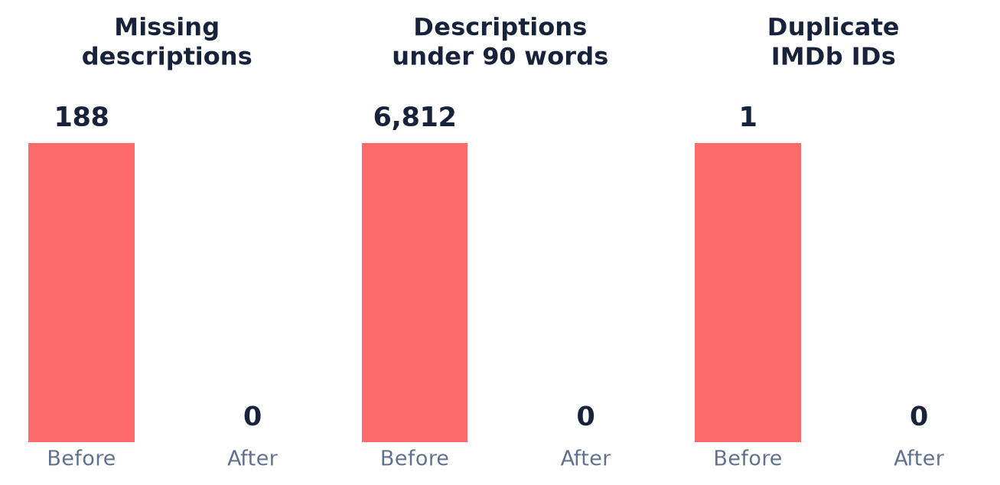
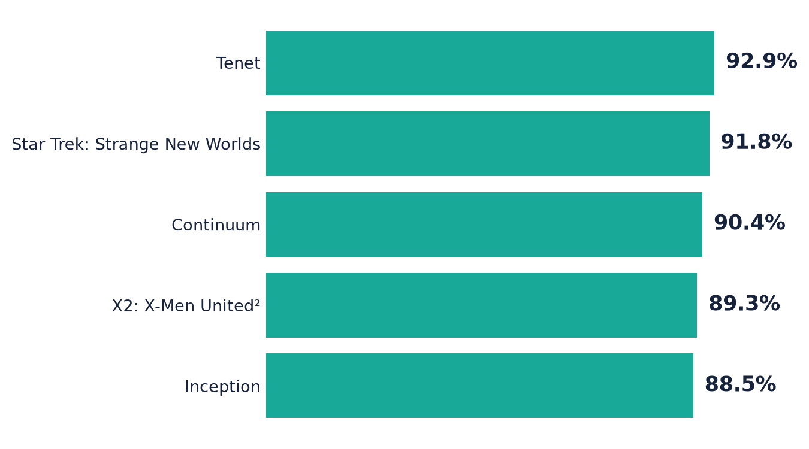

A project that recommends movies and shows based on how the user wants to feel.
7,848 titlesMood-basedEasy shortlist
Izzatkhanim Mirzakhanova
Who I am
IM
Izzatkhanim Mirzakhanova
BACKGROUND
Student learning Artificial Intelligence and Data Analytics
INTEREST
How data can be used to solve familiar, everyday problems
THIS PROJECT
A practical way to explore data cleaning, text analysis, and recommendations
Why I chose this project
“
I want to watch something, but I do not know what.
A familiar problem
Streaming platforms offer a lot of choice, but choosing can take longer than expected.
I wanted to build something practical that I would actually use myself.
My goal: help the user choose faster by starting with their mood, not only a genre.
The value of the idea
THE PROBLEM
Too many choices
The user keeps scrolling and cannot decide.
→
MY SOLUTION
Ask about mood
The user describes the experience they want.
→
THE VALUE
A shorter list
Recommendations feel more personal and easier to choose from.
EXAMPLE “I want something comforting, funny, and not too intense.”
The original dataset
SOURCE
Kaggle IMDb movies and shows dataset
The original CSV contained 7,850 rows.
It included titles, years, content types, genres, ratings, votes, and descriptions.
1Missing descriptions Some titles had no useful story text.
2Wrong descriptions Some descriptions belonged to another title.
3Uneven quality Some descriptions were too short, vague, or cut off.
4Missing genres A small number of genre values were missing.
This mattered because the recommender depends heavily on the description of each story.
How I cleaned the data
1
Check
Find missing, short, repeated, or suspicious descriptions.
→
2
Verify
Match the IMDb ID, title, year, and genre before changing a row.
→
3
Improve
Use verified Wikipedia summaries when better text was needed.
→
4
Test
Check again for missing values and incorrect joins.
7,848final usable titles
0missing descriptions
0duplicate IMDb IDs
7,632descriptions improved
Cleaning results: before and after

Figure 1: Data-quality issues found before cleaning and remaining afterward
7,850original rows
7,848final rows
7,632descriptions improved
100%meet the text target
The chart measures issues that can be counted automatically. Mismatched descriptions were also reviewed separately because they needed title-by-title checks.
How the recommender works
1
User request
“Something exciting with adventure”
→
2
Understand the request
Look for mood, theme, and story meaning
→
3
Compare titles
Find stories that are similar to the request
→
4
Show results
Return a ranked shortlist
In simple words: the computer turns text into numbers, compares those numbers, and finds descriptions with a similar meaning.
Project flowchart and architecture
DATA SOURCE
Kaggle
IMDb CSV data
→
PREPARATION
EDA & cleaning
Python · pandas
→
MOOD-BASED RECOMMENDER
ML / NLP
Meaning-based model
Compares stories and moods
LOGIC
Recommendation function
Scores and ranks titles
OUTPUT
Top matches
Current stage: the model and recommendation function run in notebooks. Future stage: connect them to an API and user interface.
How the project developed
VERSION 1
Simple rules
I connected moods to genres and keywords.
Easy to understand, but too strict.
→
VERSION 2
Word matching
I compared words in the request and descriptions.
Better, but similar meanings can use different words.
→
VERSION 3
Meaning-based matching
The current version compares the meaning of the text.
More flexible and closer to natural language.
What decides the final order?
Match scoreHow suitable is this title for the request?
Story meaningDoes the description match what the user asked for?
Mood and themesDoes the title have the right feeling and subject?
Genre and formatIs it the kind of content the user wants?
Rating and votesIs there enough evidence that viewers rated it well?
The final score combines these signals instead of trusting only one of them.
Example result: recommendation from a prompt
USER PROMPT
“I want something exciting, futuristic, and intense”
Sci-fi · Thriller · High intensity
The system reads the request and ranks the best matches.

Figure 2: Top five results returned for the prompt
The prompt is translated into genre, mood, theme, and story signals before the titles are ranked.
What works, and what is still missing?
WORKING NOW
The prototype can…
recommend from a mood or written request
find titles similar to a chosen title
rank all 7,848 titles
show why different signals affected the order
STILL MISSING
I have not yet…
tested it with a group of real users
measured whether users are more satisfied
added titles released after 2023
finished reviewing every automatic topic label
Reflection
✓
What felt easier
Building the first rule-based version and calculating scores.
!
What was difficult
Finding wrong descriptions and replacing them without mixing up titles.
↗
What I learned
Clean and trustworthy data can matter more than using a complicated model.
What I would do next
1Test with users
Ask people whether the top five results match their request.
2Improve accuracy
Tune the scoring and improve prediction scores for harder titles.
3Add feedback
Let users like, dislike, or hide recommendations.
4Build the app
Connect the model to a simple and friendly interface.
MY FIRST PRIORITYTest the recommendations with real people before making the model more complicated.
Thank you
THE MAIN IDEA
Choose by how you want to feel, not only by what genre you know.
A cleaner dataset · a more natural search · a shorter watchlist